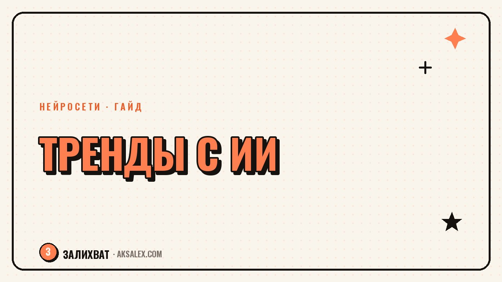

Как находить тренды для контента через ИИ

Искать тренды вручную - это часы в ленте, десятки открытых вкладок и ощущение, что ты всё равно опоздал. Нейросети не заменяют чутьё на тему, но здорово сокращают время на сбор сырых данных: что обсуждают, какие форматы набирают обороты и какие вопросы задают чаще всего. Разбираем, как встроить это в контент-план без лишней рутины.
Почему ручной поиск трендов не масштабируется
Тренд живёт от нескольких дней до пары недель. Пока ты вручную листаешь ленту, сохраняешь примеры и пытаешься понять закономерность, часть актуальности уже уходит. К тому же ручной мониторинг легко скатывается в бесцельный скроллинг без структурированного вывода.
Нейросеть решает именно техническую часть: собрать и обобщить массив данных быстрее, чем это сделает один человек за то же время. Дальше решение, какой тренд подходит именно твоей теме, остаётся за тобой.
Что можно поручить нейросети
- Анализ частых вопросов аудитории по теме - на что реально есть спрос
- Обобщение комментариев под чужими роликами в нише - какие возражения повторяются
- Группировку похожих заголовков конкурентов, чтобы увидеть общий паттерн
- Генерацию вариантов подачи одной и той же темы под разные форматы
- Быстрый черновик сценария под найденный тренд, который потом дорабатываешь сам
Нейросеть не видит live-статистику соцсетей в реальном времени, поэтому её стоит кормить свежими данными - скопированными заголовками, темами обсуждений, вопросами из комментариев - а не спрашивать напрямую 'что сейчас в тренде'.
Рабочий процесс на неделю
Как это выглядит по шагам
- Раз в неделю собери 15-20 заголовков и тем из своей ниши вручную или через подборки
- Загрузи их в нейросеть и попроси выделить повторяющиеся темы и формулировки
- Отметь 2-3 темы, которые пересекаются с твоей экспертизой и форматом
- Попроси нейросеть предложить 3 разных подачи одной темы - вопрос, история, разбор ошибки
- Выбери подачу и допиши сценарий своим языком, добавив личный опыт
Тренд без твоего личного угла - это просто копия чужого ролика с другим лицом в кадре.
Сравнение подходов к поиску тем
| Подход | Время в неделю | Риск |
|---|---|---|
| Ручной мониторинг ленты | 3-5 часов | Легко уйти в скроллинг без результата |
| Подборки трендов от других блогеров | 30-60 минут | Тема уже могла остыть к моменту публикации |
| ИИ-анализ собранных данных | 40-60 минут | Нужна свежая база данных для анализа, иначе выводы устаревшие |
Как отличить тренд от разового всплеска
Не каждая тема с высокими просмотрами - устойчивый тренд. Иногда это разовый вирусный ролик без продолжения. Проверяй: появляется ли тема у нескольких разных авторов независимо друг от друга и держится ли внимание больше недели. Если да - тренд стоит внимания, если нет - скорее случайность.
Нейросеть хорошо помогает сгруппировать похожие темы из разных источников, но оценку устойчивости лучше делать самостоятельно, глядя на даты и охваты.
Частые ошибки при работе с трендами
Первая ошибка - брать тренд без адаптации под свою нишу, просто повторяя чужой формат. Вторая - тратить на поиск трендов больше времени, чем на сам контент. Третья - игнорировать тренды, которые не идеально подходят под тему, хотя с небольшой адаптацией они бы сработали.
Тренды - это сырьё, а не готовый сценарий. Нейросеть ускоряет сбор сырья, но собирать из него интересный ролик всё равно приходится вручную.
Частые вопросы
Может ли нейросеть сама назвать актуальные тренды?
Без свежих данных на входе - нет, она не видит текущую ленту соцсетей. Работает лучше, если дать ей собранные тобой заголовки и темы для анализа.
Сколько времени в неделю уходит на поиск трендов с ИИ?
Обычно 40-60 минут вместе со сбором данных, против нескольких часов при полностью ручном мониторинге.
Как понять, что тема - устойчивый тренд, а не случайность?
Проверь, встречается ли она у разных авторов независимо и держится ли больше недели. Разовый всплеск обычно быстро затухает.
Стоит ли повторять чужой тренд один в один?
Нет, без своего угла подачи это выглядит как копия. Лучше адаптировать тему под свой опыт и формат.
Какие данные лучше давать нейросети для анализа трендов?
Заголовки, комментарии и вопросы аудитории из своей ниши за последнюю неделю - чем свежее данные, тем точнее вывод.
а не вручную